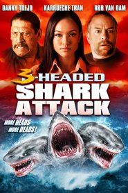
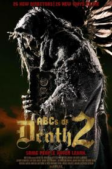
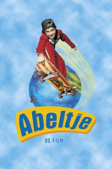
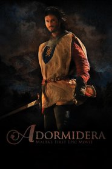
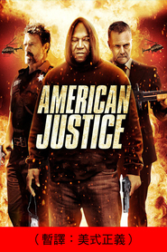
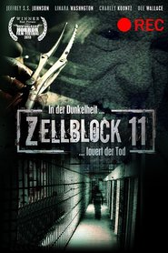
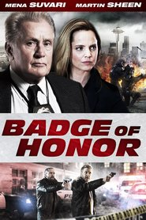
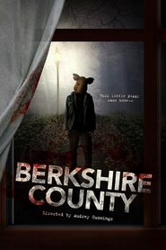

My Movie Gallery


3-Headed Shark Attack
Sciencefiction, Actie
2015


A Brony Tale
Documentaire
2014

 in 1967 uit elkaar. Zijn vrouw wil van hem scheiden, zijn dochter steelt geld van hem voor een neuscorrectie en zijn zoon houdt zich bezig met rock-")
, een voormalig rechercheur van de NYPD en herstellend alcoholist, wordt achtervolgd door spijt. Wanneer een reeks van ontvoeringen gericht op de zwaarste drugscrimineel van de stad escaleert in een gruwelijke moord overtuigt de meedogenloze leider Scudder ervan om de daders te vinden en voor het gerecht te slepen. Werkend als een niet gecertificeerde privé-detective heeft Scudder een voordeel op de politie maar begeeft zich daarmee wel op gevaarlijk terrein.")
A Walk Among the Tombstones
Misdaad, Drama, Mysterie, Thriller
2014
A Walk Among the Tombstones
Misdaad, Drama, Mysterie, Thriller
2014

The ABCs of Death 2
Horror
2014

Abeltje
Avonturen
1998
Abeltje
Avonturen
1998

Adormidera
Actie, Avonturen
2013


 is gescheiden van Dennis (Peter Paul Muller) nadat hij haar heeft bedrogen met de juf (Chantal Janzen) van hun zoontje. Hoewel Dennis haar terug wil, lijken zijn kansen verkeken als Klaasje een aantrekkelijke jonge minnaar tegenkomt (Valerio Zeno). Simone, de beste vriendin van Klaasje (Anneke Blok) is de spil van haar gezin dat ze met strakke schema")

 is een 37-jarige defensieleverancier die vrijwel door iedereen gehaat wordt. Zijn enige vriend lijkt de geavanceerde computer Jeremy. Gilcrest krijgt de opdracht de lancering van een wapensatelliet vanuit Hawaï in de gaten te houden. Samen met de humorloze Majoor Lisa Ng (Emma Stone) moet hij de inheemse Hawaiiaanse Raad veiligheid garanderen voor de lancering. Daarnaast krijgt hij de kans op een ontmoeting met Tracy, de liefde van zijn leven die wegging, samen met haar man en twee kinderen. Op Hawaï ontdekt Gilcrest zichzelf.")

American Justice
Actie
2015



Apparitional
Thriller, Horror
2014
 is de superster van de stomme film. De komst van de geluidsfilms betekent de doodsteek voor z’n carrière en George raakt in de vergetelheid. Voor de jonge figurante Peppy Miller (Bérénice Bejo) daarentegen gaat een nieuwe wereld open met grenzeloze mogelijkheden. ‘The Artist’ vertelt het verhaal van hun verweven levens.")
 is een ontluikende toneelschrijfster. Ze wil dat haar nichtje Lola en de tweeling Jackson en Pierrot een toneelstuk uitvoeren gebaseerd op één van Briony")



Badge of Honor
Thriller, Misdaad, Drama
2015
 zijn Nestertjes, een vreemd dierenras dat nergens goed voor schijnt te zijn. Als Dave van Finny hoort dat de aarde binnenkort onder water komt te staan en alle dieren samen moeten komen voor een grote reddingsoperatie, moet hij daar flink om lachen. Maar het lachen vergaat hem snel wanneer blijkt dat de overstroming er daadwerkelijk aankomt. Met de hulp van de carnivoren Hazel en haar dochter Leah weten Dave en Finny op de ark te komen die alle dieren moet redden. Maar wanneer deze op het punt staat te vertrekken, vallen Finny en Leah van boord. De kinderen zijn nu alleen en het gevecht om te overleven begint. Het onwaarschijnlijke duo begint een avontuurlijke tocht vol uitdagingen en verrassingen om zich te redden van het wassende water.")

Berkshire County
Horror
2014

 maakt deel uit van een balletgezelschap waarbinnen hevige concurrentie heerst. De belangrijkste danseres van dat moment, Beth (Winona Ryder), staat op het punt om te vertrekken en iedereen wil haar plaats innemen, te meer daar zij tot dan toe een hoofdrol vertolkte in het populaire Zwanenmeer-ballet van Tsjaikovski. Volgens artistiek leider Thomas Leroy (Vincent Cassel) heeft ze zeker talent, maar mist ze het één en ander op het mentale vlak. Ook moet ze afrekenen met haar speelzieke rivale Lily (Mila Kunis) wil zij een kans maken om de hoofdrol te gaan vertolken.")
Blood First
Actie, Misdaad, Drama
2014
Bonded by Blood 2
2015


Boulevard's End
2014

Brammetje Baas
Komedie, Familie, Foreign
2012


The Canal
Horror, Mysterie, Thriller
2014
Catch Me Daddy
Thriller
2015


Children of the Corn 666: Isaac's Return
Horror, Mysterie
1999


 gevraagd voor de hoofdrol in het toneelstuk dat haar twintig jaar eerder beroemd maakte. Destijds speelde ze Sigrid, een verleidelijke jonge vrouw die haar oudere baas Helena in een spel van liefde tot zelfmoord drijft. Nu krijgt ze de rol van de oudere, gefrustreerde Helena aangeboden. Voor de repetities reist Maria met haar assistente en vriendin Valentine (Kristen Stewart) naar Sils Maria, een afgelegen plaatsje in de Alpen. Jo-Ann Ellis (Chloë Grace Moretz), een Hollywoodsterretje dat voortdurend in schandalen is verwikkeld, zal de rol van Sigrid spelen. Oog in oog met het gezicht van jeugd en ambitie, ziet Maria zich geconfronteerd met de eindigheid van haar eigen carrière en tast ze de grenzen van vriendschap en liefde af.")


Crawl or Die
Horror, Sciencefiction, Thriller
2014
Creep Van
Horror
2012
Da Sweet Blood of Jesus
Komedie, Thriller, Romantisch
2014
Dancer and the Dame
Komedie
2015
Delicious
Foreign, Drama
2013
, een rijke landeigenaar, is getrouwd met een prachtige vrouw, die nu door een ernstig ongeluk in een terminale coma ligt. Zijn dochters van 10 en 17 jaar oud zijn onbekenden voor hem en hij denkt erover om zijn huis en land te verkopen aan een rijke vastgoedeigenaar. Twijfelend om de stekker uit de apparatuur te halen die zijn vrouw in leven houdt, komt Matt erachter dat zij een affaire had. Samen met zijn twee dochters gaat hij op zoek naar de betreffende persoon.")
Disciples
Horror
2014


The Drownsman
Fantasie, Horror, Thriller
2014

DVD
Komedie
2006

Echo Effect
Avontuur
2015

Echoes
2014
Effie Gray
Drama
2014


, het andere team wordt geleid door Scott Fischer (Jake Gyllenhaal). Journalist Jon Krakauer (Michael Kelly) gaat mee om verslag te doen van het")
Every Thing Will Be Fine
Drama
2015


. Thomas krijgt de kans een film te schrijven, \"The Face of an Angel”, gebaseerd op een boek van Simone Ford (Beckinsale), een Amerikaanse journaliste die over de zaak heeft geschreven. Samen gaan ze op weg naar Siena om research voor de film te doen. Thomas is onlangs gescheiden van zijn vrouw en heeft zijn 9-jarige dochter achtergelaten in Los Angeles. Terwijl Thomas de zaak onderzoekt geraakt hij steeds verder in een persoonlijke hel. Wanneer hij de Britse student Melanie (Delevingne) ontmoet, begint hij zich af te vragen wat belangrijker is: een onoplosbare misdaad oplossen en de film schrijven, of terugkeren naar zijn dochter.")
 en Mrs. Fox leiden een idyllisch ondergronds leventje. Twaalf \"vossejaren\" na de geboorte van hun zoontje Ash komen echter de instincten van Mr. Fox bovendrijven, iets wat het bestaan van hun hele dierengemeenschap in gevaar brengt. Om aan voedsel te komen berooft Mr. Fox namelijk de boerderijen van drie verschillende boeren, terwijl hij aan Mrs. Fox beloofd had dit niet meer te doen. Mr. Fox is de drie domme boeren steeds te slim af, maar als ze voor de zoveelste keer beroofd worden, komen ze bij elkaar en smeden ze een plan. Ze willen de \"fantastische Mr. Fox\" voorgoed uit de weg ruimen. Maar hier laat Mr. Fox het niet bij zitten. Samen met onder andere Badger, Rabbit en Weasel smeedt hij een plan om keihard terug te slaan.")


Film
2011
Film
2011
Final Girl
Actie, Drama, Thriller
2015
 is een meester op het gebied van misleiding, die een relatie krijgt met de nieuwbakken oplichtster Jess (Margot Robbie). Terwijl hij haar de fijne kneepjes van het vak leert, ziet hij in haar een risico en verbreekt de relatie. Drie jaar later duikt zijn voormalige vlam, nu een volleerde femme fatale, op in Buenos Aires, tijdens een lucratieve autorace. Nicky speelt een levensgevaarlijk spel, zij gooit al zijn plannen in de war en raakt de doortrapte oplichter volledig van de wijs.")

 is verontwaardigd over de manier waarop moslims in de wereld worden behandeld en is daarom vastbesloten om een jihadstrijder te worden. Zijn niet al te slimme vriend Waj is meteen verkocht. Omars andere vrienden, de blanke Barry en Faisel doen ook mee. Faisal kan een bom maken, maar zichzelf nog niet opblazen vanwege zijn zieke vader. Ook al zijn ze niet de slimsten, ze proberen toch op hun eigen manier de stad een klap toe te brengen.")

Freetown
Thriller, Actie, Drama
2015


 en Amy Dunne (Rosamund Pike) staan op het punt om hun vijfde huwelijksjaar te vieren. De avond vóór hun jubileum begint Nick echter enige twijfels te krijgen over de stabiliteit van zijn huwelijk en gaat hij op bezoek bij zijn tweelingzus Margo (Carrie Coon) voor advies. De volgende ochtend keert hij terug naar huis en blijkt Amy plots verdwenen te zijn. Hij schakelt direct de politie in en na enig onderzoek blijken alle aanwijzingen naar slechts één persoon te leiden: Nick.")
 heeft een lange carrière achter zich als Air Force-piloot voor het Amerikaanse leger. Nu is hij drone-piloot en opereert hij vanuit een een container in Las Vegas. Met een joystick in de hand, bestookt hij anonieme doelwitten in oorlogsgebieden. Wanneer de redenen achter zijn opdrachten steeds vager worden, komt Tom in een moreel mijnenveld terecht. Als ook nog de CIA in het spel komt, met hun eigen belangen, begint Tom zich steeds meer een pion in een ziek spel te voelen. Niet alleen zijn professionele beweegredenen, maar ook de relatie met zijn vrouw Molly (January Jones) komt onder zware spanning te staan.")
 wil al van jongs af aan bij de maffia. Hij begint als loopjongen en door de jaren heen krijgt hij steeds grotere klussen. Hij valt hierbij onder de hoede van Jimmy Conway (De Niro), een oude rot in het vak. Henry verdient bakken met geld en alles gaat op rolletjes. Na een paar jaar komt Henry erachter dat Jimmy buiten de mafia om ook nog wat zaakjes heeft lopen en hij merkt dat hij ook een beetje voor zichzelf moet gaan zorgen als hij wil blijven overleven in de harde mafia wereld.")


Hans Teeuwen: Dat dan weer wel
Komedie
2002
Hans Teeuwen: Hard en Zielig
Komedie
1995
Hans Teeuwen: Industry of Love
Komedie
2004
Hans Teeuwen: Met een Breierdeck
Komedie
1997

Hans Teeuwen: Spiksplinter
Komedie
2011

, die maar één doel voor ogen heeft: het opsporen en doden van Harry Potter (Daniel Radclife). Terwijl het hele land in oorlog verkeert, houden de bebrilde held en zijn twee beste vrienden Ron (Rupert Grint) en Hermelien (Emma Watson) zich schuil in de verste uithoeken van de Dreuzelwereld. Daar gaan ze op een levensgevaarlijke zoektocht naar de overgebleven Gruzielementen, de voorwerpen die Voldemorts ontsterfelijkheid garanderen. In de eerste helft van J.K. Rowling")
 dichter bij de dood brengen dan ooit, terwijl hij ervoor kiest om zijn zoektocht naar de Gruzielementen voort te zetten, met de hulp van Ron (Rupert Grint) en Hermelien (Emma Watson). Maar ondertussen woedt de oorlog voort, terwijl steeds meer geliefden van Harry het loodje moeten leggen. Maar de tovenaarswereld zal opstaan voor nog een laatste slag, de slag waarin de ultieme confrontatie tussen De Jongen Die Bleef Leven en de Heer van het Duister (Ralph Fiennes) zal plaatsvinden. Zal het Harry lukken om Voldemort weer sterfelijk te maken en hem voorgoed te verslaan?")


 moves in with her grandparents after she")
The Harvest
Horror, Thriller
2013


 woont op het eiland Berk, waar draken bevechten een manier van leven is. De intelligentie en de eigenwijze humor van de tiener vallen niet in goede aarde bij de stamleden en het stamhoofd... dat niemand minder is dan de vader van Hiccup. Maar wanneer Hiccup samen met andere Vikingjongens drakentraining krijgt, ziet hij zijn kans schoon om te bewijzen dat hij uit het goede hout gesneden is om krijger te worden. Wanneer hij echter een gewonde draak ontmoet, wordt zijn wereld ondersteboven gegooid, en wat begon als de enige gelegenheid voor Hiccup om zichzelf te bewijzen, verandert in een kans op een nieuwe toekomst voor de hele stam...")


 at the height of his success, is suddenly thrust into the spotlight as head designer of his fashion empire. At first ridiculed by critics worldwide, Donatella falls victim to drug addiction and nearly bankrupts the company. With the help of her family, including daughter Allegra, Aunt Lucia (Welch) and brother Santo (Feore), she enters rehab to confront her demons and soon comes back stronger than ever to re-ignite the beloved Versace brand with her own vision and builds one of the most powerful and influential fashion houses ever known.")
House of Versace
TV Film
2013
Huff
Horror, Thriller
2013


 de Hongerspelen twee keer overleefd. Maar ondanks dat ze de bloederige arena levend heeft verlaten, is ze nog steeds niet veilig. Haar geliefde Peeta Mellark (Josh Hutcherson) is gevangen genomen door Het Capitool dat uit is op wraak en president Snow maakt duidelijk dat niemand veilig is. Katniss groeit uit tot het gezicht van de revolutie, een opstand van de districten die zich verzet tegen de regering die hen regeert en verhongert. Bij de massa wordt ze bekend als hun")
I Love Your Moves
Avontuur
2012

Iconoclast
Fantasie
2012


, heeft tot grote woede van zijn meerderen een rel veroorzaakt in de media door per ongeluk in een radio-uitzending een mogelijke aanval op het Midden-Oosten te onthullen. Om de schade te herstellen arriveert de meedogenloze, hysterische “spin-doctor” Malcolm Tucker (Peter Capaldi), die Foster onmiddellijk op een “zoektocht naar de feiten” trip naar Washington stuurt. Foster vindt zich plotseling terug in een anarchistische wereld van vredesactivisten, losgeslagen oorlogsfanaten, infantiele bureaucraten en irritante stagiaires. Vanuit Northampton naar de “West Wing” in Washington en het wordt alleen maar erger…")
 is een meesterdief, gespecialiseerd in het “stelen” van waardevolle geheimen in de droomstaat van een mens, wanneer de geest het kwetsbaarst is. Cobb is hierdoor een gewilde speler in de verraderlijke nieuwe wereld van bedrijfsspionage, maar dit heeft hem tegelijkertijd ook tot een internationale vluchteling gemaakt, wat hem alles kan kosten wat hij ooit lief had. Nu krijgen Cobb en zijn team van specialisten een nieuwe taak aangeboden. Een")
 getuige van de brute moord op haar familie, onder leiding van nazi-kolonel Hans Landa (Christoph Waltz). Ze weet maar net te ontsnappen en vlucht naar Parijs, waar ze een nieuwe identiteit aanneemt en een filmtheater gaat runnen. Ondertussen, ergens anders in Frankrijk, neemt een joodse groep soldaten, onder leiding van Lt. Aldo Raine (Brad Pitt) wraak op de nazi")


, with commentary from an ex-wife and more than 30 fellow comedians, friends, employees, and biographers. The biography defines why Carson was an enduring star (his cool, his timing, his genuine laugh, his breadth of knowledge) and pursues his motivations and inner self (a loner with a drinking problem, a decent Midwesterner whose mother withheld approval, a quiet person who loved to entertain). The key to understanding him, argues the biography, is his love of magic.")
Julia und der Offizier
Drama, TV Film
2014


Karakter
Drama, Historisch, Foreign
1997


Kill the Messenger
Misdaad, Drama, Mysterie, Thriller
2014
Killing Jesus
Drama, Historisch
2015
, Jean François Bernard (1987), Marco Pantani (2000), Richard Virenque (2002) en Juan Manuel Garate (2009). In De Koning van de Mont Ventoux komen de wielerkampioenen uit verschillende generaties elkaar tegen in één race. In een virtuele wedstrijd wordt bepaald wie de snelste klimmer aller tijden is. Gezien de technologische ontwikkelingen van de fiets lijken de kansen van de oudere generaties klein. Toch blijft de uitkomst tot op de laatste kilometer onbeslist. Veertig jaar wielergeschiedenis in één adembenemende beklimming waarbij de kampioenen terugblikken op hun carrière en de evolutie van de wielercompetitie. Wie van hen is uiteindelijk de koning van de Mont Ventoux?")


LA Apocalypse
Actie, Sciencefiction, Thriller
2014
De laatste dagen van Emma Blank
Komedie, Foreign
2009


Last Shift
Thriller, Horror
2014

Lemon Tree Passage
Horror, Mysterie, Thriller
2014
 uit Dublin is niet al te enthousiast over haar taak. Ze moet namelijk dagelijks een bezoek brengen aan haar grootmoeder Nan (Fionnula Flanagan). Deze laatste is bijna tachtig, erg onafhankelijk en wordt beschreven door haar nakomelingen als een twistzieke oude vrouw. Het gaat slecht in Ierland, dat economisch aan de grond zit. Stilaan sijpelen er bij Emma’s familie ook nog spanningen binnen, want haar dertigjarige oom Colm woont nog bij Nan en heeft de onaangename gewoonte van geld te lenen aan Emma’s moeder.")


Love of My Life
Horror, Thriller
2013


Madeo
Misdaad, Drama, Mysterie, Thriller
2009


The Making of 'Star Wars'
Documentaire
1977

The Man with the Iron Fists 2
Actie
2015
Manny Lewis
Komedie
2015


Mega Shark vs. Kolossus
Thriller, Actie, Horror, Sciencefiction
2015


Minoes
Komedie, Fantasie, Sciencefiction, Familie, Foreign
2001

 leeft al bijna drie jaar op de maan in opdracht van Lunar Industries. Hij leeft daar een eenzaam bestaan, heeft amper contact met zijn vrouw Tess en driejarige dochter Eve door een defecte satelliet. Zijn enige maatje aan boord is Gerty: een robot. Twee weken voordat hij naar Aarde mag terugkeren krijgt Sam gezondheidsproblemen waardoor hij een bijna-fataal ongeluk krijgt. Als hij hiervan herstelt krijgt hij zeer onverwachts bezoek. Samen met de bezoeker ontdekken ze een groot complot.")
 only has eyes for Cammy (Thorne), the smart, popular redhead at school. When Max finally scores a date with Cammy on Halloween, Phears, an evil ghost with plans on taking over the world, unleashes his ghouls and things go haywire. With the help of his ghostly pals, Tara and Nicky, can Max thwart Phears")

Movie
Documentaire
2014
Movie
Documentaire
2014
Movie
Documentaire
2014
Movie
Documentaire
2014
 is a down-on-his-luck New Yorker who inherits a Parisian apartment from his estranged father. But when he arrives in France to sell the vast domicile, he")
My Trip Back to the Dark Side
Misdaad, Thriller
2014
Mythica: The Darkspore
Fantasie
2015
 is een gedreven jongeman die wanhopig op zoek is naar een baan. Hij ontdekt de snelle wereld van misdaadverslaggeving in de Amerikaanse miljoenenstad en worstelt zich al snel tussen de die-hard freelance journalisten die auto-ongelukken, branden, moorden en andere chaotische toestanden filmen voor de vele nieuwsstations in de stad. Als")
 stuit tijdens het jagen vlakbij de Rio Grande op enkele lijken, heroïne en een koffer met meer dan 2 miljoen dollar, de uitkomst van een mislukte drugsdeal. Moss besluit om de koffer met geld mee te nemen. Binnen no-time zit huurmoordenaar Anton Chigurh (Javier Bardem) hem op de hielen om de koffer te retourneren aan de rechtmatige eigenaar en laat daarbij een spoor van lijken na. Ze worden op de voet gevolgd door sheriff Ed Tom Bell (Tommy Lee Jones) die het allemaal probeert te bevatten.")


Nothing Special
Komedie, Drama
2010
Of Silence
Drama, Horror, Sciencefiction
2014
Oliver, Stoned.
Komedie
2014
One Song
Animatie
2014
, and her estranged husband Jeremy (Luke Goss), a Senior Police Officer, is kidnapped and held hostage, they are left desperate, with no choice but to follow the kidnapper")
 hires them to put on a show at a secluded campground, the girls find themselves being stalked by a homicidal maniac with a sick obsession with ice. As they")
Playing It Cool
Komedie, Romantisch
2014
, een zestienjarig Afro-Amerikaans meisje geboren in Harlem, in een keiharde omgeving. Het leven lacht haar niet bepaald toe: ze is voor de tweede keer in verwachting van haar vader. Thuis loopt ze op eieren om te vermijden dat haar moeder (Mo")
President's Day
Horror, Komedie
2010


The Real King's Speech
Documentaire, Historisch
2011

Red Army
Documentaire, Historisch
2014

The Retrieval
Thriller
2014
The Rewrite
Komedie, Romantisch
2014


San Andreas Quake
Actie, Sciencefiction
2015

The Search for Freedom
Avontuur, Documentaire
2015
Search Party
Komedie
2014
 en Serena Pemberton (Lawrence) reizen van Boston naar de bergen van Noord-Carolina om daar hun geluk te zoeken in de houtindustrie. Serena doet er niet onder voor de doorsnee man. Ze houdt toezicht op de werknemers, jaagt op ratelslangen en redt zelfs het leven van een man in de wildernis. Samen runnen deze koning en koningin hun eigen rijk en hebben er alles voor over om hun huidig leventje en toekomstplannen te beschermen. Wanneer dat in gevaar komt brengt dat ook hun droomhuwelijk aan het wankelen.")
Set Fire to the Stars
Drama
2014
 is een Spook, een persoon die vecht tegen het kwaad, en heeft eeuwen geleden de slechte en krachtige heks, Moeder Malkin (Julianne Moore), gevangen gezet. Maar nu is ze ontsnapt en ze is uit op wraak. Terwijl ze haar volgers bijeen roept, bereidt Moeder Malkin zich voor om haar woede te botvieren op de nietsvermoedende mensen. Slechts één ding staat in haar weg: John Gregory. John zelf is niet meer de jongste en probeert iemand te vinden die hem kan opvolgen. Hij heeft zijn hoop gevestigd op de jonge boerenzoon Thomas ward.")
 is een dertiger die in New York woont en moeite heeft om zijn seksleven onder controle te houden. Hij is verslaafd aan pornografie en hierdoor heeft hij moeite om echte relaties met vrouwen aan te knopen. Slechts één vrouw kan echt dicht bij hem komen: zijn eigenzinnige, jongere zus Sissy (Carey Mulligan). Brandon mag dan wel in het openbaar de schijn ophouden een normaal leven te leiden, Sissy weet wel beter. Wanneer ze bij hem in zijn appartement komt wonen, loopt Brandons leven uit de hand. Broer en zus brengen immers het slechtste in elkaar naar boven.")
 en zijn vriend, huisgenoot en loyale assistent Dr. John Watson (Jude Law) grijpen in bij een geheim ritueel waarbij ze de invloedrijke Lord Blackwood (Mark Strong) te pakken weten te krijgen. Blackwood verdwijnt achter de tralies en wordt veroordeeld tot de strop. Hij schijnt over duistere krachten te beschikken, kan dingen doen waar geen verklaring voor bestaat en beweert zelfs dat hij kan herrijzen uit de dood. Dit zorgt ervoor dat Holmes en Watson, bijgestaan door Irene Adler (Rachel McAdams), zich onvrijwillig met hun")
Showdown in Little Tokyo
Actie, Komedie, Thriller
1991
 en zijn nieuwe partner Teddy Daniels (Leonardo DiCaprio) gaan op zoek naar een moordenares die ontsnapt is uit T.B.S.-kliniek")
The Sign of Four
Mysterie, Misdaad, Thriller
1987

Simon
Komedie, Drama, Musical, Foreign
2004
 besluit vanuit Schotland naar Colorado af te reizen, in de hoop zich te herenigen met zijn ware liefde. Tijdens zijn zoektocht merkt hij al gauw hoe gevaarlijk het leven is in het Amerikaanse Wilde Westen en wanneer hij de mysterieuze reiziger Silas (Michael Fassbender) ontmoet, kan hij zijn steun goed gebruiken. Silas gaat tegen betaling met Jay mee op zijn reis door Amerika om hem te beschermen en zijn ervaring uit het reizigersbestaan met hem te delen.")


Son of a Gun
Actie, Misdaad, Drama
2014
 is looking for an escape from his family")
 is een tovenaarsmeester in het hedendaagse Manhattan die probeert zijn stad te beschermen tegen zijn aartsvijand, Maxim Horvath. Balthazar kan dit echter niet alleen, daarom benadert hij de jonge Dave Stutler (Jay Baruchel). Dave is een doorsnee jongen maar heeft een verborgen potentieel om een tovenaar te kunnen worden. Balthazar neemt de jongen onder zijn hoede en geeft zijn onzekere leerling een stoomcursus magie. Het vergt het uiterste van Dave zijn moed om Balthazars training te overleven, de stad te redden en het meisje van zijn dromen voor zich te winnen.")
Sparrows Can't Sing
Komedie, Drama
1963


Spud 3: Learning to Fly
Komedie
2014
 is down on his luck. Stood up at the altar and recently fired from his banking job, he finds himself working with his mother as a part-time tourist advisor at Dublin Airport. It")

Star Wars: Music by John Williams
Documentaire, Muziek
1980

Strange Blood
Sciencefiction, Horror
2015
 ziet bij het uitbreken van de Tweede Wereldoorlog haar man vertrekken naar het front. Eigenlijk heeft ze nooit van hem gehouden. Zij blijft achter met haar schoonmoeder (Kristin Scott Thomas) en brengt haar tijd door met piano spelen. Maar wanneer ze verplicht worden een Duitse officier (Matthias Schoenaerts) te huisvesten, een man genaamd Bruno von Falk, die in zijn vroegere burgerleven componist blijkt geweest te zijn, voelt ze zich al vlug tot de man aangetrokken.")


Theo Maassen: Bepaalde Dingen
1994
Theo Maassen: Einde Oefening
Komedie, Foreign
2013
Theo Maassen: Functioneel Naakt
Komedie
2001
Theo Maassen: Ruwe Pit
Komedie
1998

Theo Maassen: Tegen beter weten in
Komedie
2006


Toxin
Actie, Horror, Sciencefiction
2014
Toxin
Drama, Horror, Sciencefiction, Thriller
2015


Under the Electric Sky
2014
Unfinished Business
Komedie
2015
Vampire
Drama, Horror, Thriller
2011

 en Bosco (een hond), die in staat zijn om te ‘communiceren’ met Jerry. Het probleem is echter dat Jerry’s huisdieren hem vaak proberen te overtuigen om verschrikkelijke dingen te doen. Enkel nadat hij Katie (Gemma Arterton) leert kennen, lijkt er wat normaliteit in zijn leven te komen. Een tragisch ongeluk brengt Jerry’s leven echter compleet uit balans, en de enige bij wie hij voor hulp terecht kan, zijn zijn eigen pratende huisdieren.")


 can barely recall when the Oregon valley was still lush. It")

 is een klein jongetje vol kattenkwaad. Maar achter zijn schijnbare stoere verschijning gaat een heuse wereld schuil. Deze wereld, die alleen voor Max is, bestaat uit een bos bewoond door fabelachtige wilde beesten, die Max tot hun koning gekroond hebben. Gebaseerd op het kinderboek van Maurice Sendak.")


Zodiac
Sciencefiction, TV Film
2014
Zusje
Komedie, Drama, Mysterie, Romantisch, Familie, Foreign
1995
 zuiden van Nederland aanbiedt. Het bezette deel van Nederland ontvluchten blijkt echter niet zo gemakkelijk als ze had gedacht.")
Movie list updated on: 2015.11.26@11:09:48
Made by Gabriel A. Zorrilla / rnijenhu
Project link.
Thanks to:

Made by Gabriel A. Zorrilla / rnijenhu
Project link.
Thanks to: